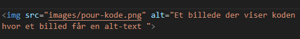

Hvad er P.O.U.R?
P.O.U.R. står for "Perceptible, Operable, Understandable, and Robust," og det er en grundlæggende designprincip inden for webudvikling, der sigter mod at forbedre tilgængeligheden for brugere, især dem med forskellige funktionsnedsættelser. Disse principper er fastlagt af Web Content Accessibility Guidelines (WCAG), der er en international standard designet til at gøre webindhold mere tilgængeligt for alle brugere, uanset deres evner.
Perceivable
Princippet "Perceivable" inden for webtilgængelighed fokuserer på at gøre information og brugergrænseflader opfattelige for alle brugere. Handler om at sikre, at informationen og brugergrænsefladen er opfattelige af alle brugere, herunder dem med nedsat syn eller hørelse. For at opfylde dette princip bør tekstindhold ledsages af alternative tekster til billeder, farver og layout skal være letlæselige og kontrastfulde. I forhold til udvikling bør HTML-elementerne bruge meningsfulde tags som fx header, nav, main, section, og footer, istedet for kun div, hvilket gør koden mere letlæselig og semantisk. Billeder bør have alternative tekster (alt attribut), hvilket gør dem funktionel for brugere med synshandicap.
Så er der visuelt hierarki ved at variere kontrasten mellem forskellige elementer. Konsistent stil: der er en ensartet kontrastniveau på tværs af hele siden for at give et sammenhængende udseende.
Operable
Fokuserer på at skabe grænseflader, der er brugbare af alle brugere, inklusive dem med motoriske eller kognitive udfordringer. Der er implementeret responsivt design med medieforespørgsler (@media), hvilket gør websiden betjenbar på forskellige enheder og skærmstørrelser. Navigationsmenuen (burger-ikon) kan styres af brugeren og er synlig, hvilket gør navigationen tilgængelig for alle.
Understandable
Handler om at sikre, at information og brugerinteraktion er letforståelige for alle brugere, uanset deres baggrund eller evner. Eksempel: At bruge klare og enkle sprogbrug samt at organisere indholdet på en logisk måde. HTML og CSS-koden er organiseret og kommenteret, hvilket gør det lettere for udviklere at forstå og vedligeholde koden. Teksten på siden er klart struktureret med overskrifter og afsnit, hvilket gør indholdet forståeligt.
Formularer og interaktive elementer leveres med klare og koncise instruktioner for at hjælpe brugere med at udfylde dem korrekt. Fejlmeddelelser er informative og guider brugeren til korrektion af eventuelle fejl i formularindsendelse.
Robust
Fokuserer på at udvikle webindhold, der er robust og kompatibelt med forskellige teknologier og enheder. Eksempel: At kode webstedet, så det fungerer på forskellige browsere og enheder uden problemer. Der er anvendt korrekte og valide HTML-tags, hvilket gør koden robust og mere modstandsdygtig over for ændringer i webstandarder. Websiden er testet på forskellige browsere og enheder for at sikre, at den fungerer korrekt på forskellige platforme. Koden anvender moderne webstandarder og er skrevet på en måde, der gør det lettere at tilføje nye funktioner eller justere eksisterende uden at bryde tilgængeligheden.
Referencer
- https://www.w3.org/TR/WCAG21/#text-spacing
- - Success Criterion 1.4.12 Text Spacing
- https://www.w3.org/TR/WCAG21/#text-alternatives
- - Guideline 1.1 Text Alternatives
- https://www.w3.org/TR/WCAG21/#page-titled
- - Success Criterion 2.4.2 Page Titled
- https://www.w3.org/TR/WCAG21/